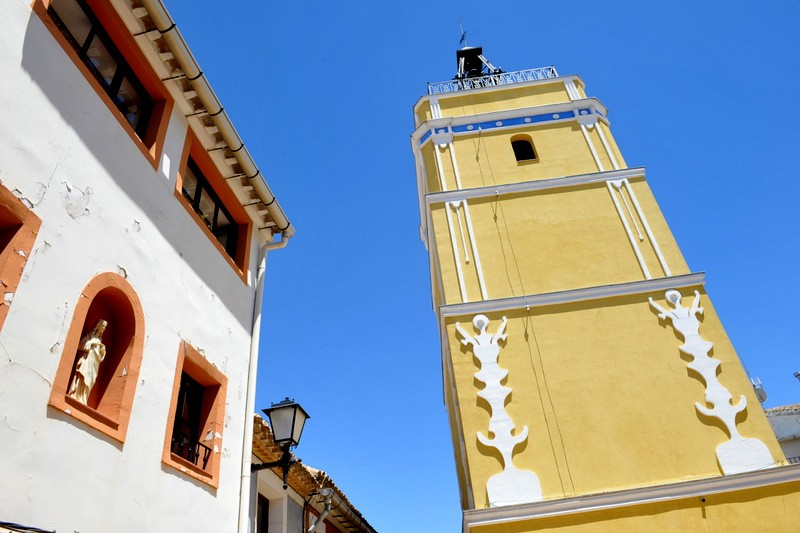
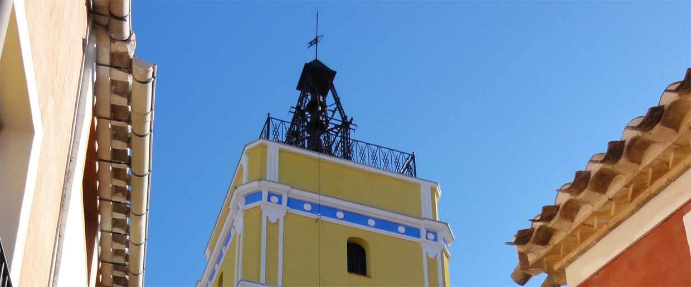
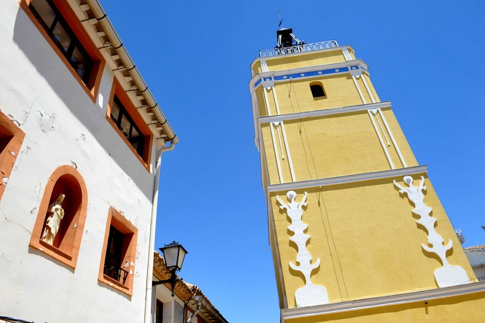
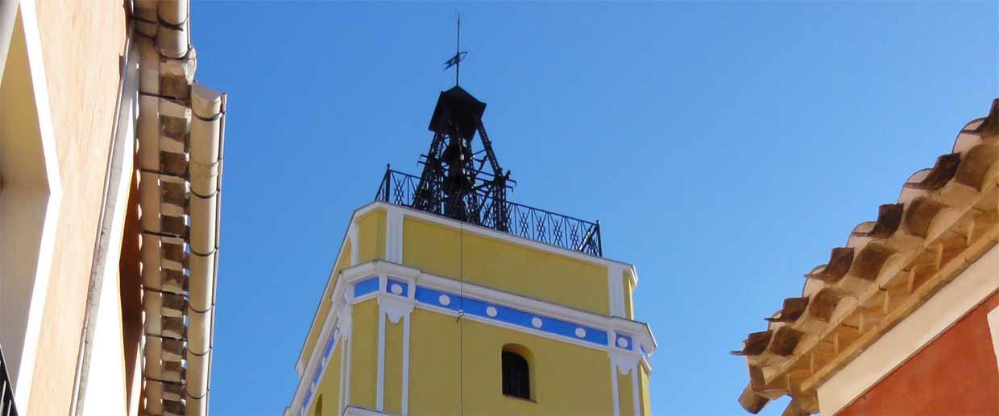

Torre del reloj
 



Historia
La Torre de Santiago o Torre del Reloj se construyó en 1900 con el fin de informar de la hora a los vecinos y especialmente para regular las tandas de riego en la ya desaparecida huerta del Calderón. Fue una iniciativa totalmente privada del entonces alcalde Joaquín Carreño Góngora, quien terminaría donando el edificio al Ayuntamiento en 1916. Su maquinaria, de fabricación suiza, fue puesta en funcionamiento por el relojero palentino Moisés Díez, quien también se encargó de realizar las tres campanas que hacen sonar cuartos y horas. En 1992 se abrió la plaza situada a los pies de la Torre y desde 2010 el reloj funciona de forma automática, desapareciendo la necesidad de darle cuerda a diario, como venía haciéndose desde sus orígenes.
Informacion
El reloj de la Torre de la Iglesia de Santiago de Bullas fue inaugurado el 25 de julio de 1900. Su principal finalidad era regular el horario de riegos.